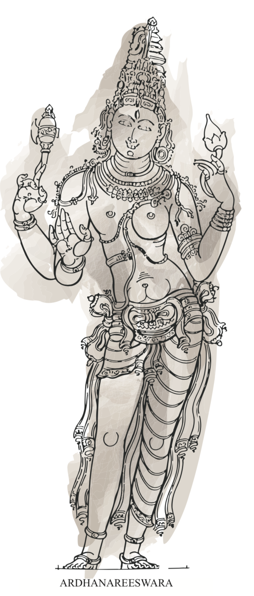
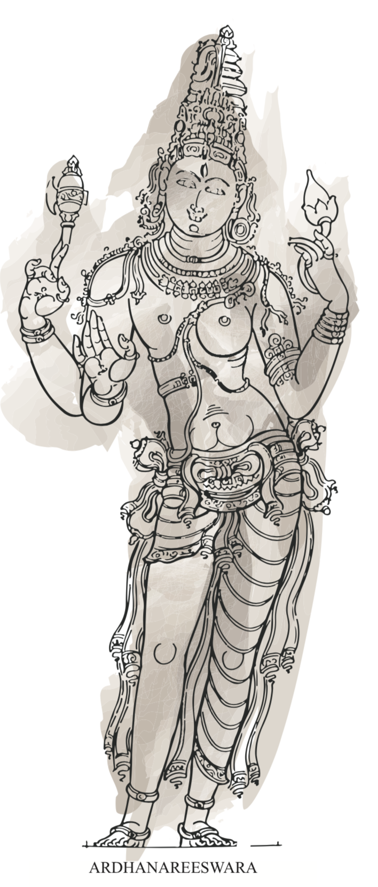
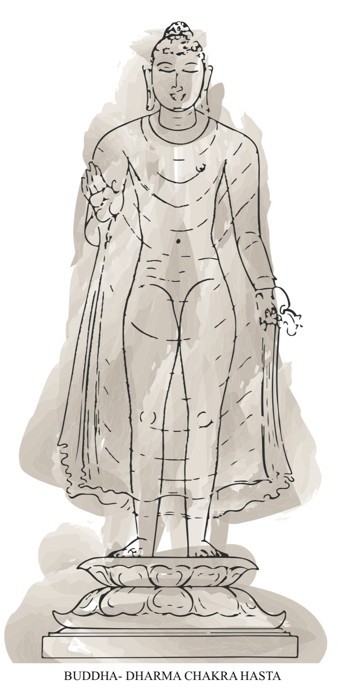
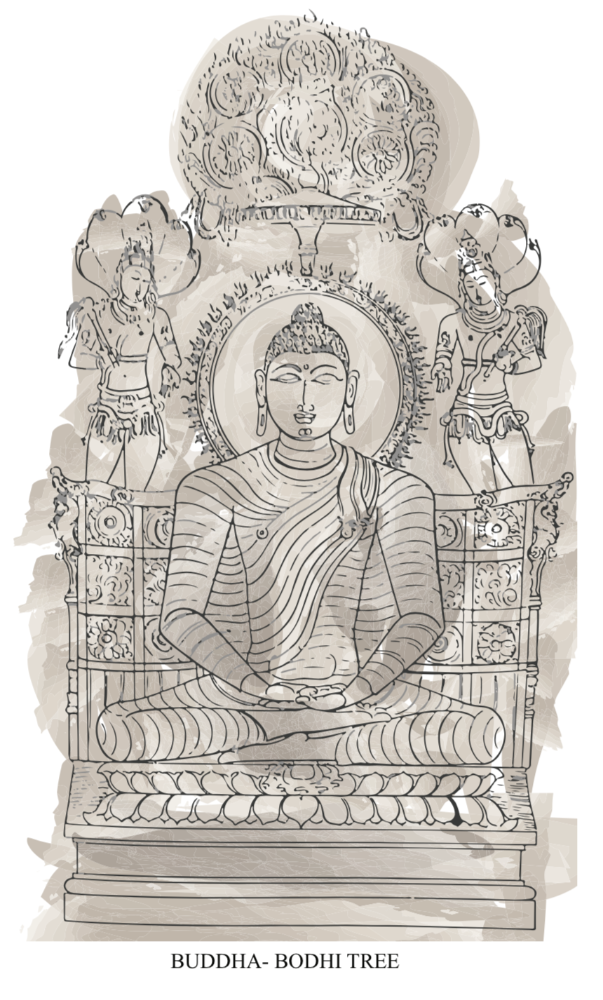
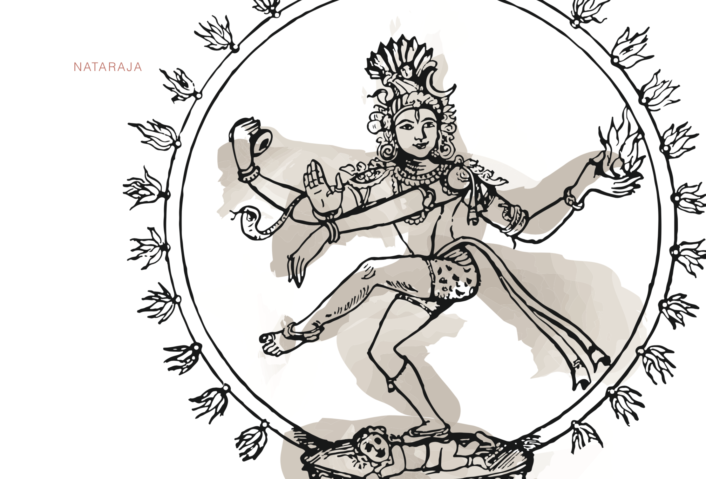

ARDHANAREESWARA
Fashioned in Utthama dasa tala. 14. The lord who is half woman is an androgynous form of Lord Shiva and his consort Parvathi. It
represents the aesthetic symbiosis of masculine and feminine energies in the universe. The
masculine side representing Shiva, has half third eye, Thrishool (trident) in one arm and another
palm depicting varada mudra (blessing gesture) whereas Parvathi’s part is sculpted in a more
composite form. This composition symbolises the inseparable balance that the unity of male
and female beholds, in the universe.
Thickness of the eyebrow = 0’-1 1/2”
Set back of the forehead = 0’- 2”
Width of upper forehead = 8’- 4”
If a circle is inscribed with the width of the centre of forehead as diametre, the portions outside
this circle on either side is called taravatam
taravatam = 2’-0”
BUDDHA
The divine image of Gautama Buddha should be fashioned in Utthama dash tala. The image of
Buddha should have a broad face, elongated eyes, a prominent nose, long and shapely ears,
with a gentle smile on the lips. The arms should be rounded and long. The chest should be
fash- ioned with great beauty. The various parts of the body should be well formed and
rounded and the stomach should be clearly indicated. The skin should be white in colour and a
mark called urna should be placed on the forehead between the eyebrows which is a tuft of
hair.
The other features of Buddha image are curly hair, coiled bun on top of the head, yellow silken
cloth below the waist, an upper garment fastened on the left shoulder and draped to the right
waist. The end go the garment should be pleated and gracefully fixed on the shoulder.
Eyes
Distance between eyebrow and eye Width of eye =2’-0”
Length of eye = 0’-3 1/2”
Diametre of iris = 0’-6”
Width of upper lid = 1’-4”
Width of lower lid = 0’-4”
When eyes are open = 0’-4 1/2”
Upper lid width = 0’-2”
Lower lid width = 0’-5 1/2”
White of the eye = 0’-1”
The symbols- changu, chakram, tribulation and lotus- should be engraved on the soles of the
feet



NATARAJA
1. Ring of Cosmic Fire
It represents the cosmic fire to destroy the universe as a part of the mighty cycle of destruction
and creation, each flame holding three points.
2. Third eye
The third eye, also known as ‘jnana caksu’- meaning eye of wisdom, is a representation of Lord
Shiva’s cosmic and universal knowledge and power.
3. Right Hand
The open right palm showcases the ‘abhaya’ mudra depicting the futility of fear in the minds of
his